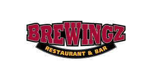
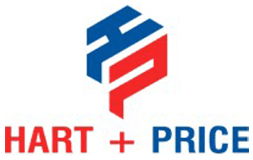
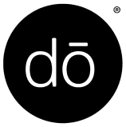
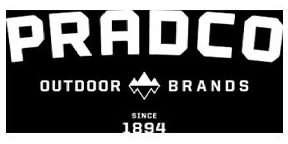
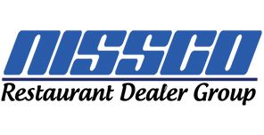
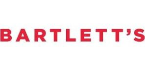

01
Food & Beverage
Food and beverage producers and distributors with quality certifications and loyal wholesale and retail customers, and multi-unit restaurant and catering groups.
Subsector Expertise
Specialized M&A advisory for consumer products, food and beverage, distribution, and consumer services businesses.
Helping owners of privately held consumer businesses maximize enterprise value through differentiated strategic positioning, targeted buyer engagement, and disciplined transaction execution.
† Completed transactions tagged to the categories that make up our Consumer group on benchmarkintl.com/about/our-success, as of October 2026.
Overview
The consumer sector presents a dynamic M&A environment shaped by evolving purchasing behavior, changing distribution channels, shifting brand preferences, and continued consolidation across fragmented markets. Strategic acquirers pursue acquisitions to strengthen brand portfolios, expand product categories, access new distribution channels, and capture operational synergies. Private equity investors seek differentiated consumer businesses with durable customer demand, attractive unit economics, scalable operating models, and identifiable opportunities for organic and acquisition-led growth.
Benchmark International's Consumer Group provides specialized sell-side M&A advisory services to privately held businesses across four core sectors: Food & Beverage; Consumer Brands & Products; Foodservice & Distribution; and Consumer Services & Retail.
We combine industry expertise, rigorous financial and operational analysis, and a detailed understanding of buyer underwriting criteria to develop compelling investment theses that differentiate our clients in the marketplace. Our approach emphasizes brand equity, pricing power, revenue quality, customer and channel diversification, gross margin sustainability, working capital efficiency, and long-term growth potential.
Every engagement is led by experienced professionals within our Middle Market team and supported by Benchmark International's global network of strategic acquirers, private equity firms, family offices, and other qualified buyers. Through comprehensive transaction preparation, tailored buyer identification, and competitive sale processes, we seek to maximize enterprise value, optimize transaction terms, and deliver outcomes aligned with our clients' strategic and financial objectives.
Sector Expertise
We advise consumer companies in four sectors, including these subsectors:
Food and beverage producers and distributors with quality certifications and loyal wholesale and retail customers, and multi-unit restaurant and catering groups.
Subsector Expertise
Branded products with recognized names, enthusiast followings, and multi-channel distribution.
Subsector Expertise
Restaurant equipment, parts, supplies, and service providers, and the distributors that keep restaurants, hospitality, and retail operating.
Subsector Expertise
Multi-site and route-based consumer services with recurring local demand.
Subsector Expertise
Selected Transactions

Texas provider of steel shipping and storage containers with custom fabrication capabilities.
Consumer Brands & Products
Operator of Permian Basin collision repair centers (Platinum Collision and Pat Gray Collision).
Consumer Services & Retail
Operator of four fast-casual, health-focused salad, soup, and sandwich restaurants in Kansas.
Food & Beverage Acquired By
Acquired ByPortland, Maine importer, processor, and distributor of fresh and frozen seafood.
Food & Beverage
Pioneer in durable, eco-conscious buffet and food presentation solutions.
Foodservice & Distribution Acquired By
Acquired ByValue-added wholesale distributor of premium grills and outdoor kitchen appliances.
Foodservice & DistributionGarage door dealer providing installation, repair, and maintenance across Indiana and Illinois.
Consumer Services & Retail
Acquired ByHouston restaurant group operating BreWingZ, a family-friendly chicken wings and sports bar concept.
Food & BeverageDesigner and omnichannel retailer of women's golf, tennis, and pickleball accessories.
Consumer Brands & ProductsE-commerce supplier of commercial coffee equipment, parts, and services since 1993.
Foodservice & Distribution
Florida distributor of foodservice equipment and supplies.
Foodservice & Distribution Acquired By
Acquired ByOutsourced B2B sales and account management partner to consumer packaged goods companies.
Foodservice & Distribution Acquired By
Acquired BySouthwest Ohio home-delivered meal service for aging and disabled individuals, operating since 1987.
Food & Beverage
Wholesale food distributor of eggs, butter, cheese, dairy, and manufacturing ingredients.
Food & Beverage
Kosher-certified wholesale bakery serving hotels, theme parks, hospitals, and restaurants across Florida since 1977.
Food & Beverage
Acquired ByNew York confectionery innovator known for its edible and ready-to-bake cookie doughs.
Food & BeverageIllinois importer, processor, and distributor of specialty Korean and Japanese foods for restaurants and markets.
Foodservice & DistributionIndustry-leading supplier of kayak, paddle sports, and marine accessories.
Consumer Brands & ProductsNew Mexico operator of vehicle wash, detailing, and quick-lube locations (Rain Tunnel Car Spa).
Consumer Services & Retail Acquired By
Acquired ByFamily-run operator of six Jimmy John's franchise restaurants in the Denver metro area.
Food & Beverage Acquired By
Acquired ByTexas barbecue restaurant chain founded in Dallas in 2000, known for pit-smoked meats.
Food & Beverage Acquired By
Acquired ByFull-service nutritional supplement manufacturer covering product development through fulfillment.
Food & BeverageManufacturer of custom embroidered and printed flags for the Department of Defense and commercial customers.
Consumer Brands & Products Acquired By
Acquired ByCalifornia-based clean, all-natural wellness and beauty brand.
Consumer Brands & Products
East Tennessee equipment rental and mini-storage business with a 28-year operating history.
Consumer Services & Retail
Owner of leading fishing-lure brands Gene Larew, Bobby Garland, and Crappie Pro.
Consumer Brands & ProductsDistributor serving 500+ farm equipment dealers across the Southeast for more than 85 years.
Foodservice & DistributionUpscale Houston restaurant and lounge founded in 2014 at Vintage Park.
Food & Beverage
Acquired ByRestaurant equipment and supply dealer group.
Foodservice & Distribution Acquired By
Acquired By
Frozen seafood importer and exporter serving high-end restaurants, markets, and grocery stores.
Food & BeverageNaples, Florida, breakfast and lunch restaurant group with five Southwest Florida locations.
Food & Beverage Acquired By
Acquired By
Nashville, Tennessee, steakhouse operating as Jimmy Kelly's Steakhouse since 1934.
Food & Beverage
Acquired ByAustin, Texas, restaurant operating under the Bartlett's name.
Food & Beverage Acquired By
Acquired BySales, marketing, and order-processing brokerage serving consumer packaged goods brands across retail channels.
Foodservice & DistributionPatent-holding dental device brand behind ReLeaf® aerosol-reduction evacuator attachments.
Consumer Brands & ProductsMarket Perspective
Strategic and financial acquirers evaluate the strength of consumer brands through customer loyalty, repeat purchasing behavior, product differentiation, and demonstrated pricing power. Businesses capable of sustaining volumes and gross margins through changing economic conditions can offer more compelling investment characteristics than brands dependent primarily on promotional activity.
Distribution strategy remains central to consumer business valuations. Acquirers assess revenue concentration and performance across wholesale, retail, direct-to-consumer, e-commerce, and foodservice channels. Businesses with diversified routes to market, attractive channel-level profitability, and opportunities to expand distribution can present compelling strategic value.
Consumer-focused strategic acquirers continue to evaluate acquisitions that complement existing product portfolios, strengthen competitive positioning, expand geographic reach, and create opportunities for procurement, manufacturing, logistics, and commercial synergies. Differentiated middle-market businesses may provide efficient entry points into attractive consumer categories.
Consumer services and multi-location businesses are evaluated on unit-level economics, same-store revenue trends, customer retention, operating consistency, and market expansion opportunities. Acquirers increasingly distinguish between businesses that have demonstrated repeatable location-level performance and those whose growth depends heavily on founder involvement or continued capital investment.
What Buyers Value
Brand recognition, customer loyalty, differentiated products, intellectual property, pricing power, and defensible market positioning.
Revenue growth, repeat purchase behavior, customer concentration, channel-level profitability, distribution relationships, and demand visibility.
Normalized EBITDA, gross margin sustainability, operating leverage, working capital efficiency, capital expenditure requirements, and free cash flow generation.
Product-level contribution margins, customer acquisition costs, inventory turns, same-store sales performance, location-level profitability, and operational efficiency.
Experienced leadership, institutionalized operating systems, supply chain resilience, production capacity, and reduced founder dependency.
New product development, distribution expansion, adjacent categories, geographic penetration, operational improvement, and acquisition-led growth opportunities.
Who Is Buying
How We Help
Our Consumer Group provides comprehensive sell-side M&A advisory services tailored to the strategic, financial, and personal objectives of privately held business owners. We combine rigorous preparation, differentiated positioning, targeted buyer engagement, and disciplined execution to pursue competitive transaction outcomes.
Comprehensive advisory services for the sale of privately held consumer businesses, including valuation analysis, transaction preparation, investment memorandum development, buyer identification, competitive process management, negotiation, due diligence coordination, and closing execution.
Advisory services for qualifying change-of-control transactions involving strategic acquirers, private equity firms, and family offices. We help owners evaluate transaction structures, retained ownership opportunities, management continuity, and the alignment of deal terms with shareholder objectives.
Development of tailored acquisition theses and identification of qualified strategic and financial acquirers. Our approach evaluates strategic fit, acquisition rationale, financial capacity, integration considerations, and transaction certainty to identify buyers capable of recognizing and realizing the company's differentiated value.
Comprehensive assessments of transaction readiness, financial reporting, quality of earnings, operational performance, valuation considerations, management depth, and potential diligence risks. We help owners identify opportunities to strengthen their businesses and prepare for an efficient, competitive sale process.
Questions Owners Ask
Our Middle Market team provides specialized sell-side M&A advisory services to privately held businesses across four primary sectors: Food & Beverage; Consumer Brands & Products; Foodservice & Distribution; and Consumer Services & Retail. Our expertise encompasses manufacturers, branded products businesses, specialty distributors, multi-unit operators, and consumer services providers.
Valuation is influenced by financial performance, brand strength, revenue growth, customer loyalty, gross margin sustainability, distribution capabilities, market positioning, and future growth prospects. Acquirers also consider management depth, working capital requirements, cash flow conversion, customer concentration, and transaction-specific strategic synergies. The relative importance of these factors varies considerably by consumer subsector and business model.
The buyer universe typically includes strategic industry participants, private equity-backed operating platforms, and qualified financial acquirers pursuing controlling ownership positions. Strategic buyers may prioritize product portfolio expansion, distribution capabilities, complementary brands, and operational synergies, while financial sponsors often emphasize sustainable earnings, management quality, operating scalability, and identifiable growth opportunities.
Our Middle Market team combines industry-focused transaction expertise, rigorous financial analysis, investment positioning, and a disciplined competitive sale process. We develop company-specific investment theses, identify buyers with compelling acquisition rationales, manage confidential buyer engagement, and negotiate transaction structures designed to maximize shareholder value while balancing execution certainty and other owner priorities.
Owners should assess the quality and sustainability of earnings, customer and channel concentration, gross margin performance, inventory management, supplier relationships, management depth, and growth opportunities. Early preparation allows management to address operational and financial diligence matters, strengthen transaction positioning, and more effectively demonstrate enterprise value to prospective acquirers.
As of October 2026, Benchmark International's published transaction history identifies more than 80 completed transactions across the consumer-related categories represented on this page. Our selected transactions encompass food and beverage, consumer products, foodservice and distribution, and consumer services businesses.
Certain qualifying controlling ownership transactions may allow sellers to retain a minority equity interest in the acquired business. The availability and suitability of retained ownership depend on the buyer, transaction structure, shareholder objectives, and applicable regulatory requirements. Such arrangements are evaluated within the context of a qualifying change-of-control transaction.
Your Deal Team
Confidential. No pressure. No commitments.
Sector expertise. Strategic positioning. Disciplined execution.
Whether you're considering a near-term sale or evaluating a future ownership transition, Benchmark International's Middle Market team provides the transaction expertise, market perspective, and disciplined execution capabilities to help you realize the full value of what you've built.
Call to speak with an M&A expert at 813-771-6675